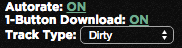

DJ City Easy Rate
Usage:
A record icon will appear in the address bar when you are on http://www.djcity.com/ or http://www.djcity.co.uk/, you can click the icon for options. An overlay will also appear in the top left of the site, which you can use to also toggle options.
- Pressing 1, 2, 3, 4, or 5 on a song screen will rate the song & submit that rating.
- Pressing p will play / pause the song.
- If 1-button download is enabled, pressing d will download the song with the selected type.
- If autorate is enabled, the song will be automatically rated at selected rating on page load.
- If 1-button download & autorate are both enabled, the song will be automatically rated & downloaded on page load. Will only download each type of song once with this option.
- Use overlay (top left) of screen to toggle options as well.
- When overlay is visible, press shift + arrow-up or shift + arrow-down to change between song types.

Feedback, Suggestions, Bugs?
Let me know!